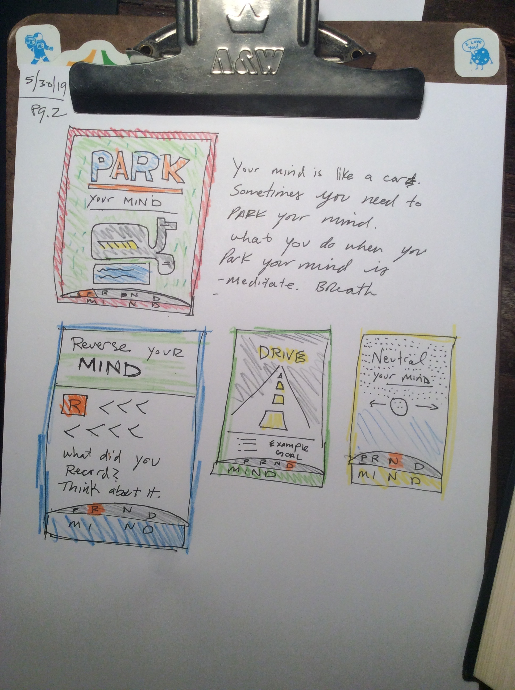

Birthdays are not a big deal to me. But if the activities over this month require
a reason, then I am going to choose that this is first Birthday Month.
It began in Alaska. Then I came home to 6 Irish lads living next door. They leave
in 2 weeks and that is how long I plan to holiday. They are a gift I gladly receive
after five years of war .
8 June 2019
#8 #ouch
Portfolio pieces
I have a theory that everything is connected. Wealth is connected to doing something well. Doing something well is connected to practice. Practice is connected to Time. Time is connected to everything.
I accept the law that we must labor 6 days away. If I must labor, then I want to do it well. To me, that means mastery of all things withing my ability. I have yet to reach the limit of my ability. I am still in student mode. And I am afraid I will continue to be so until I die.
One such example is a combination of experiences around soap.
Why I like soap
I like smells. Which probably is in direct love as my distaste for certain textures
I admired what Dollar Shave Club did. And they did
a few things including:
Use the web
Sell a real product
Have repeat customers
Get bought
I visited Missoula, and discovered Bontaine Soap. I want to develop a relationship with them. Then, I want to help them with FakeFarm.
I bought some of Bontaine's variety bar and tried to make a memory of it with my sons. A simple project while we were in the middle of an unneccssry parent evaluation plan during my divorce - which validated me as the good guy.
I need some portfolio pieces. First, I need to write about them with
And. If I have nothing going on, then i have
nothing to write about.
But, in order to write about it, I have
to have something to do.
And that something is a portfolio piece.
Both & and a soap company are my portfolio p
8 June 2019
#7 #42
What is the meaning of life?
In the cult classic book, "Hitch Hikers Guide to the Galaxy" someone asks the question of what is the meaning of life, to the most powerful computer ever made. At least, that is what I can remember of the story. I bought the book twice, actually. The first time, it was stolen along with my backpack when I visited Mexico. The second time, I made it half way through. However, I was a bit distracted with my own war. But I digress. In the book, the answer to all of life's questions is simply the number "42" which is both confusing and one of the many enduring details of the book. I am turning 42 in 29 days. It is no exaggeration when I say that at least the last 5 years of my life have been focused on the same question as the Guide.
The other similarity between myself and that book is that I did find guidance from a book. That book, being the bible. But not the whole bible. At least, not yet. Over the course of 3 years, I have only started reading the bible for myself. I began like I do with any other book - at the beginning.
May 30, 2019
#6 #question
why are your rights
better than
My
Rights?
These are the kind of questions that people do not ask in
public. These are the kinds of questions people kill messengers
over. Simply posing the question the messenger is accused of
being associated with the question asker. When in fact - I am
just a messenger. I am not asking this question. I am asking,
how does one decide?
May 30, 2019
#5 #poetry
In the beginning Elohim (et) created the heaven and the earth
Genesis 1:1
The Day
& the Night.
The Dark
& the Light
The battle
between & you.
6 June 2019
#4 #dadzoo
PRND MIND
Last month I drove across country in a moving truck. During the long, straight, and uneventful parts of Kansas I regularly read the 4 letters on my dash: Park, Reverse, Neutral, and Drive.
I got to thinking that that would make for a great place to plant a trigger thought. Could I teach my sons something valuable that would be remembered anytime they got into a car a drove.
I want to teach my sons to use their minds to the fullest extent so I wondered about aligning the movements of a car with the movements of the mind. What follows are doodles of a few poster ideas.

The funny thing to think about is if this concept will be squashed by driverless cars. Will they even be driving when they are adults. It's hard to be a parent!
May 27, 2019
#3 #about me
Co Co Co Co
Corporate Coding College of Colorado
May 27, 2019
I like labels. They help me think. I am two weeks new to a
completely new life. One that is separate than the previous 3
years. Separate from the previous 20 years in a way too.
May 27, 2019
When I started coding I saw how much of an endeavor it was. As a
family man, I couldn't see how I would ever have the time and
energy to achieve the techinical knowledge this field requires.
May 27, 2019
My current schedule is as simple as one might get. I am living
solo with nothing but time, debts, books, job, and motivation to
master my craft.
May 25, 2019
#2 #what are my rights
Free [censored] Speech, [derrogatory] [name].
May 27, 2019
In the beginning was the Word. The word is what separates man
from animal. It is the origin of thoughts manifested to the
outside world. Who has the right to control what you think or
say? Certainly there are authorities who claim that the purpose
of censorship is safety from evil. But who's to say that the
authority is not evil? Words are also the beginning of action.
You can stop action early by stopping words.
May 27, 2019
At what point can we disagree without being labeled abnormal? At
what point do abnormal citizens reject the claim they are the
weird ones? If this is about freedom, then contrairians have as
much right to contrian views as others have to their
CNN/FOX/DRUDGE/BLUE/RED views. This is what information war
looks like. It begins and ends with words.
May 27, 2019
What is a newspaper
but a collection of topics gathered together with a particular
slant. Blogs serve the same purpose. In the most modest sense,
this is my new blog. But I did not grow up reading blogs. I grew
up reading newspapers, magazines, and comic books. I am a
product of my generation and so I want to use my modern tools to
make something nostalgic.
May 27, 2019
I want the freedom of speech founded on the freedom of press.
I want to start a newspaper to keep track of information I, as
the Editor in Cheif, deem important. I also want to design these
pages to be printer friendly in the event that one day, I do
have something worth printing.
May 27, 2019
This is how I plan to invest my time. The ROI is a combintation
of practice, hobby, and teaching.
May 27, 2019
One of my motivations for becoming a full stack developer is
that I want to exercise my right to free speech. Even if this
means disagreeing with majority's point of view. There are many
ways to control people's minds. News is one of them. The fewer
news stands, the fewer competing ideas about the same events. My
vision is to share information that is news to you.
May 25, 2019
#1 #code
This is a static site.
May 27, 2019
Communication is an incredible difficult skill. It requires near
mastery of many separate topics. Some of which include critical
thinking, literacy, spelling, confidence, articulation,
personality, and an ability to make the topic of focus
interesting.
May 27, 2019
The main reason I code is to communicate. I want to send
important messages to important people. Communication is also
the first step to commerce. I got into all this because I wanted
to sell more tshirts.
May 27, 2019
This site is an experiment in my ability to communicate over the
web. While there are many optimizations that could occur, I am
not willing to swap out success for effeciency just yet. You
see, here I am actually communcating with you, the reader at
this moment.
Cache Warning
So far the only technical issue I have had with this exercise is
dealing with page caching. It is interesting to see how long a
dated page can remain on the client even if you want it to be
refreshed. As a business, I want to make changes and for my
customers to see the lastest version of the site. At minimum for
the reason that I just worked NNN hours (or $$$ hours) and I
want to see an ROI. This gives me another reason why JavaScript
might be a necessity if I plan to engage in any real commerce.
If I cannot get around caching with simply HTML and CSS, then
(unless I can assume my users will clear their cache), I am at a
disadvantage to be js-free.
This internal conflict you are witnessing in this writing is due
to a desire to support Progressive Enhancement. I
love the idea and I am attempting to achieve it in it's purest
form. This means, I simply need to confirm via the googles if I
can break cache (on gh-pages, for 'free') or if I need to simply
make the edit in an NGINX file and pay for digital ocean $5 a
month to break'yo cache!
To Err is Sublime
Another example of practice paying off is how much more I am
leaning on my text editor. I on SublimeText 3 after taking the
following tour of editors: Text Mate, Sublime Text 2, Ruby Mine,
Atom, Vim, then Atom again, then Vim again.
I am comfortable writing HTML. I am motivated to do so because
it is tip of the spear. It is a powerful language. It is a
language which has the ability to share with you over the web.
As much as I want to skip the step of writing and managing HTML
by hand, this is the most comfortable with to manage my data if
I want to publish it. "publish" is the key word here. because if
I were only interested in journaling then I would use IaWriter,
or simply write by hand. I am actively working toward more
complex distribution and storage methods but currently I do not
have the complete skill set to publish, protect, and automate
this process. another way to say it, is I have the muscle memory
and workflow established for a hand made site, but not so much
yet for larger initistives. but, if or when I do level up my
skills then my personal publishing methods may upgrade as welll.
Coding by hand is also giving me the unexpecrted benefit of
preparing me for some of the scripting needs of DevOps. I am
already writing simple Ruby scripts to automate some of my
tasks. for example, the /page/index.htm is genersted by a
script.
May 25, 2019
#0 #alert
Domain Retired.
After 02/2020, I will no longer receive an email from anything
ending in 'woodalls.me'.
May 27, 2019
Why retire? Well, I bought this domain when I had a family. The
idea of being a part of a plural group (Woodalls) means family.
And, well that's a bit to painful for me right now to live in
the present, as though it were the past.
Do you know dave@woodalls.me?
May 27, 2019
If you wish to remain connected, email Dave before that date.
dave@woodalls.me will also retire 02/2020.